Introducción y Vista General
Bienvenido al manual interactivo de RACK Designer. Esta herramienta gráfica está diseñada para simplificar el diseño, documentación e inventario de Centros de Datos.
Tip: Puedes alternar entre el "Modo Oscuro" y "Modo Claro" usando el menú principal ☰ en la esquina superior derecha de la aplicación.
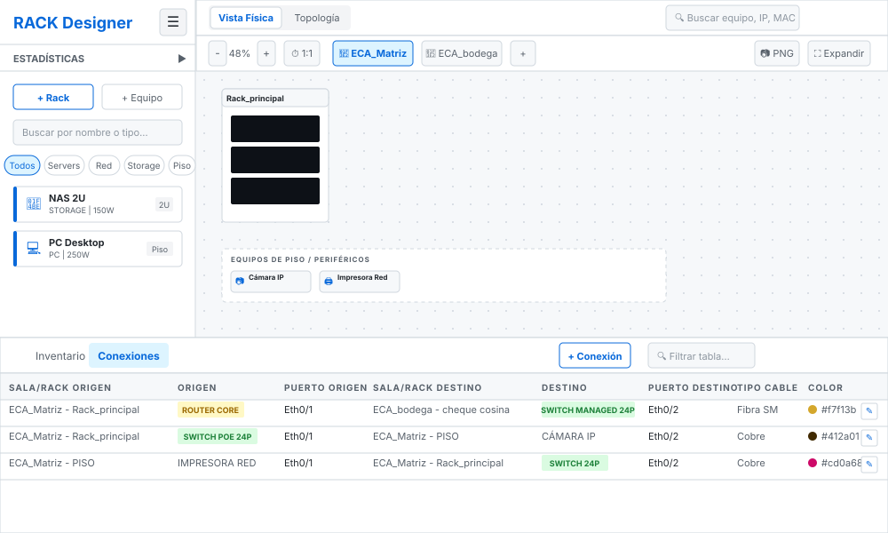
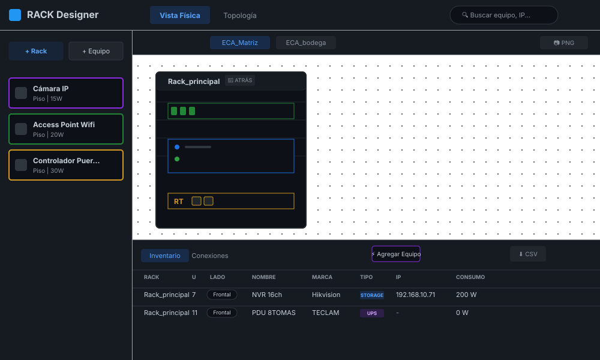
Áreas de Trabajo
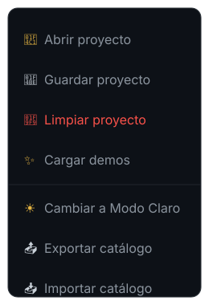
Tip de Rendimiento: Al hacer clic en este punto verde se activa el "Modo Rendimiento", deteniendo instantáneamente todas las animaciones gráficas para ahorrar batería y recursos en computadoras menos potentes.
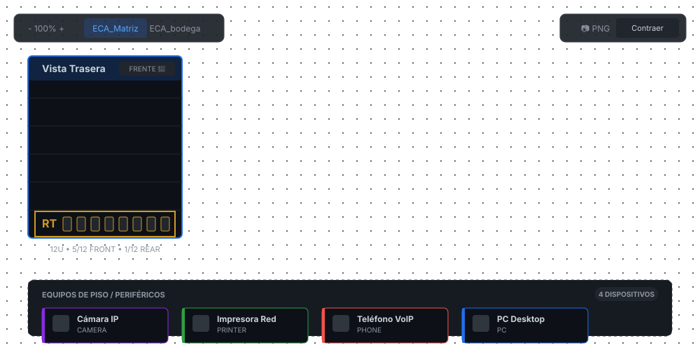
Adaptabilidad a Pantallas
RACK Designer cuenta con soporte completo para pantallas táctiles y dispositivos móviles. En pantallas de escritorio, el diseño se expande lateralmente. En dispositivos móviles, la interfaz se adapta automáticamente apilando los gabinetes verticalmente y ocultando el catálogo lateral bajo el menú hamburguesa ☰ para maximizar el lienzo de trabajo, logrando una vista vertical optimizada.
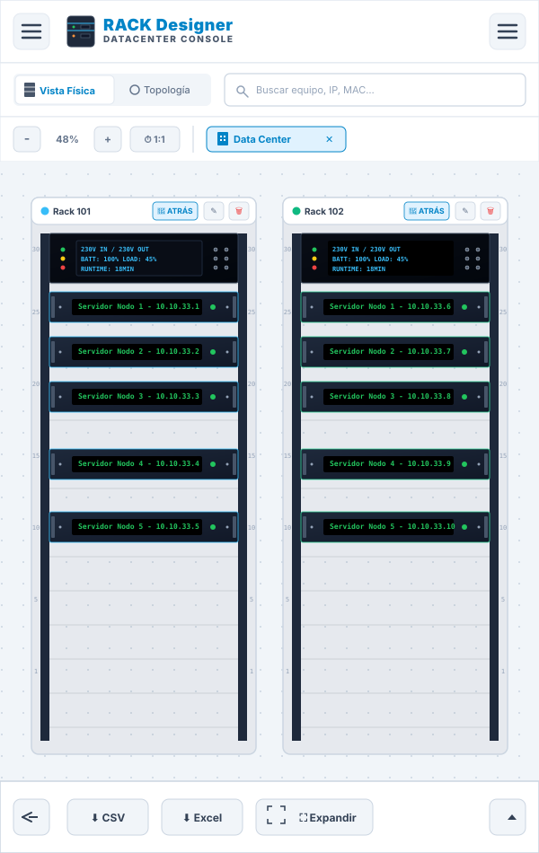
Infraestructura (Salas y Gabinetes)
Gestión de Salas
Todo el equipo debe organizarse dentro de una "Sala". Las salas contienen "Gabinetes" (Racks) donde atornillarás los servidores.

Interfaz Móvil: En dispositivos móviles, el formulario se reestructura automáticamente para pantallas pequeñas, asegurando que los campos de texto se mantengan accesibles mediante teclado en pantalla y sin desbordamientos.
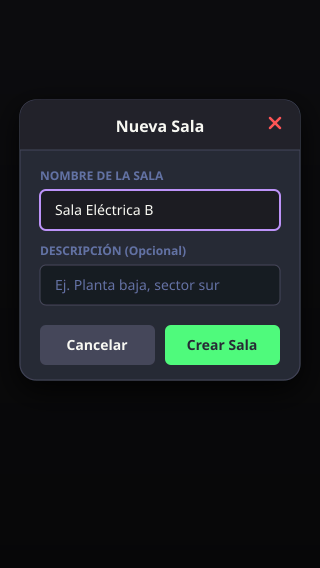
Crear un Gabinete
✨ Atajos Rápidos: Cuando una sala no contiene ningún gabinete (estado vacío), el sistema mostrará botones interactivos en el centro del lienzo para que puedas agregar tu primer Rack o Equipo de Piso instantáneamente con un solo clic.
Haciendo clic derecho en el lienzo azul, podrás crear un nuevo Rack. Deberás asignarle un Nombre, una altura en Unidades (U) (típicamente 42U o 48U) y un Color distintivo.

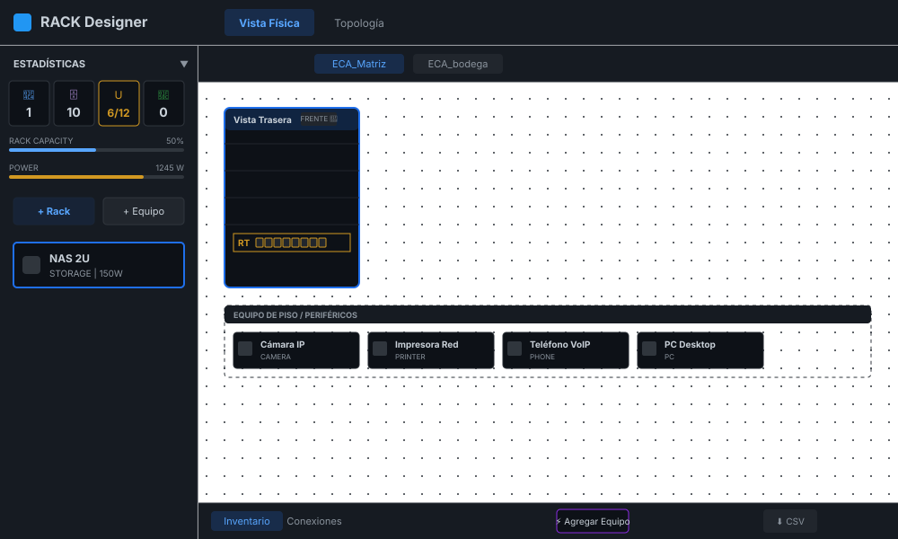

Como se muestra en la figura, cada unidad (U) puede alojar un equipo frontal y, de forma independiente, un equipo trasero (como regletas eléctricas o PDUs) sin chocar entre sí.
Opciones del Gabinete (Menú Contextual)
Cada Gabinete posee un botón de opciones (⋮) en su cabecera superior. Al hacer clic, se despliega un menú contextual flotante que agrupa todas las acciones de administración del rack:
Gestión de Equipos
Métodos de Instalación
⚡ Agregar Equipo de la barra inferior para usar el asistente de instalación paso a paso sin arrastrar.

Catálogo Móvil: En dispositivos móviles, al pulsar el menú hamburguesa, el sistema despliega un panel lateral flotante (off-canvas) con el catálogo y estadísticas optimizadas para arrastre y tap táctil.
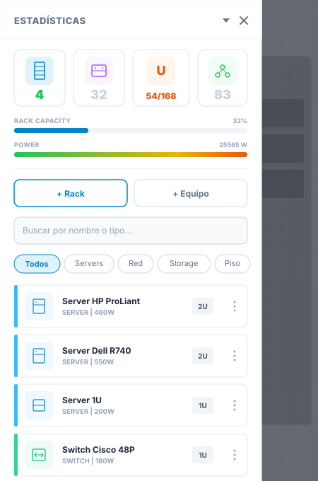
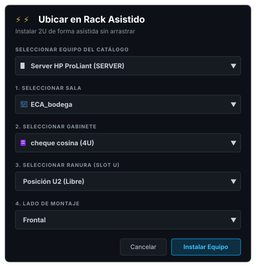
Módulos de Configuración
Al editar un equipo, verás casillas de verificación (Checkboxes) para habilitar configuraciones avanzadas. Si un equipo es "pasivo" (ej. un patch panel), no necesitas habilitar estos módulos.
Propiedades y Ficha Técnica
Haciendo doble clic en un equipo, se abrirá su ficha técnica. Aquí puedes documentar:
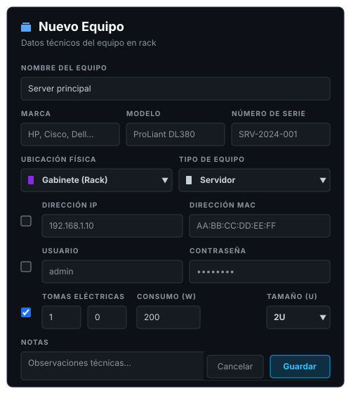
Configuración Móvil: En pantallas de smartphones, el formulario se reestructura visualmente en una grilla compacta de dos columnas con casillas de activación adaptadas a gestos táctiles amplios.
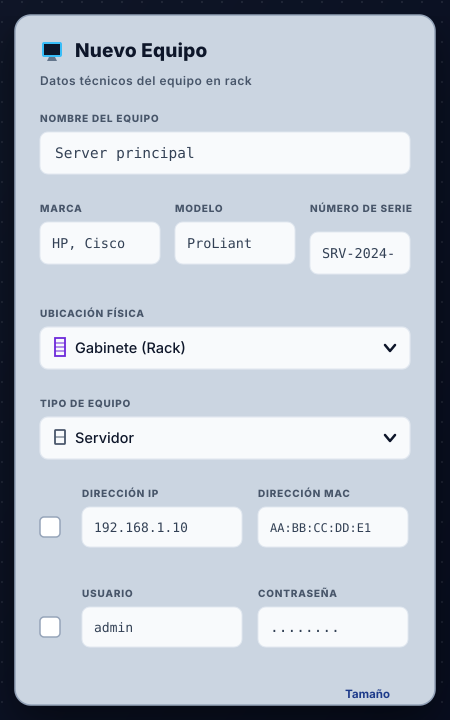
Topología y Redes
La vista topológica permite conectar los equipos mediante cables lógicos. Los equipos se renderizan como Nodos interconectados.
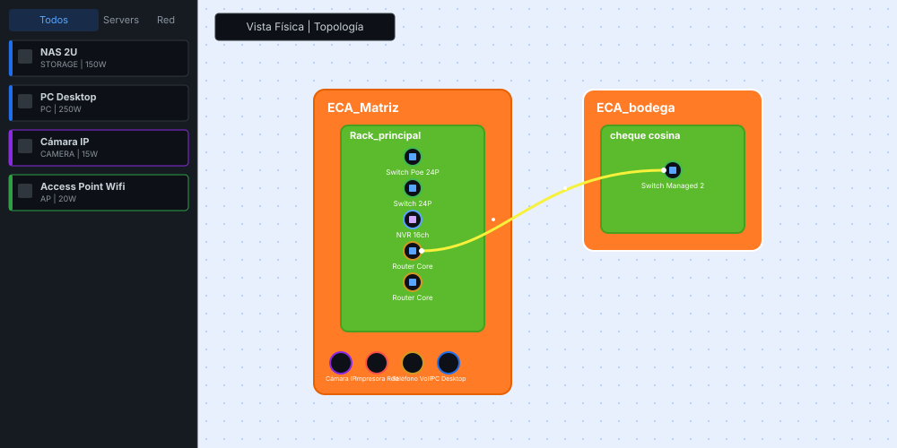
En dispositivos móviles, el sistema auto-escala el nivel de zoom inicial al 20% y agrupa las salas de manera que los enlaces (fibra/ethernet) sean legibles rápidamente. Además, el diálogo de conexión se adapta al ancho de pantalla:
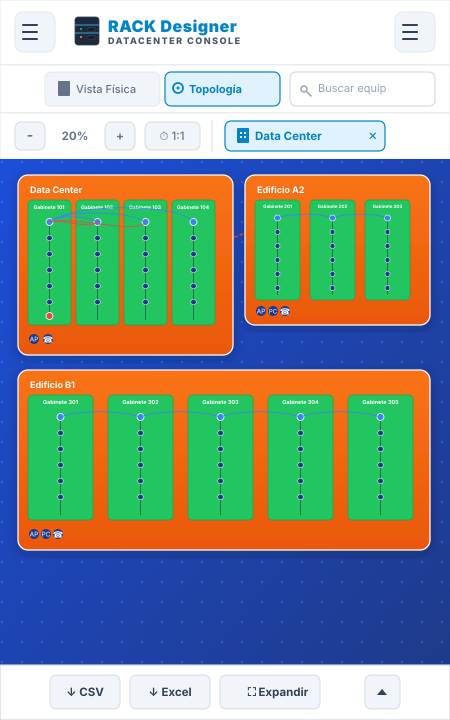
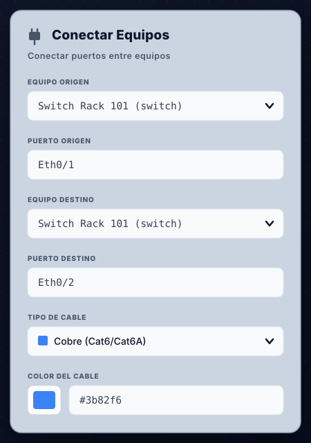
Para conectar dos equipos, simplemente haz doble clic en un nodo de origen y luego selecciona el nodo de destino. Esto abrirá el menú de configuración de enlace.

A medida que diseñes tu red, podrás visualizar la arquitectura completa (Full-Screen) donde se aprecian las rutas de cada cable. El color de las líneas representará los enlaces que has creado.
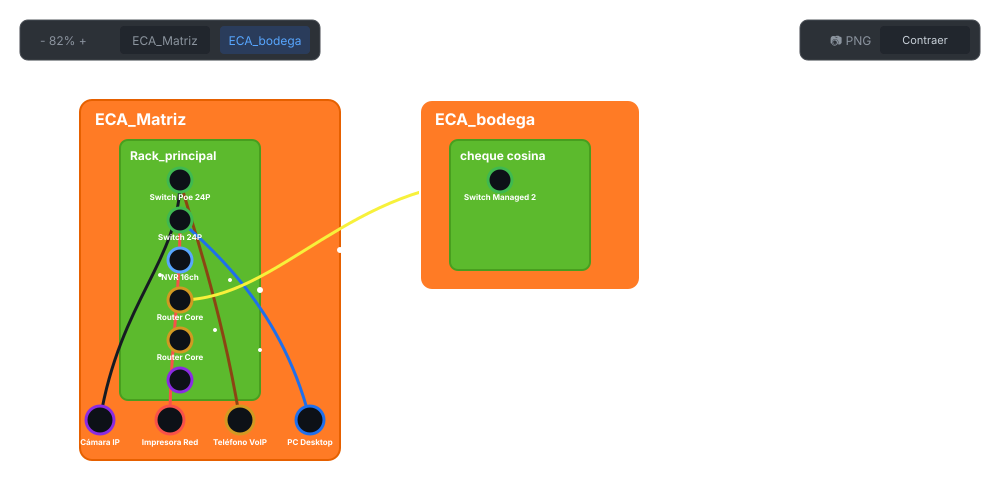
Puedes utilizar la rueda del ratón o los controles de zoom (🔍) en la barra superior para acercarte (Zoom In) y observar en detalle los nodos y las rutas de cableado, incluyendo las IPs de los equipos principales.
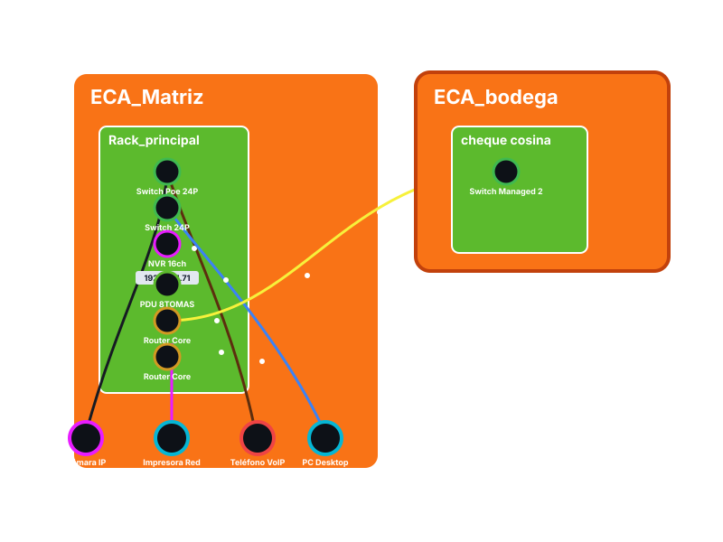
Tabla de Conexiones
Alternando la pestaña del panel inferior a Conexiones, puedes acceder a una bitácora tabular de todos los enlaces que has creado. Aquí verás el detalle de los puertos y colores asignados, con la posibilidad de editarlos o eliminarlos masivamente.

Para mayor comodidad durante auditorías extensas, puedes hacer clic en el botón Expandir de la tabla para ocultar el lienzo y ver la bitácora en pantalla completa.
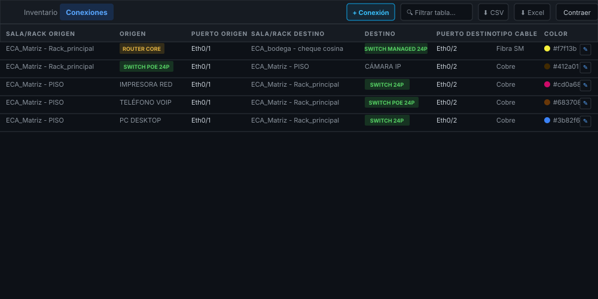
Respaldos y Exportación
Es fundamental respaldar el trabajo periódicamente y utilizar la tabla de inventario para auditorías.
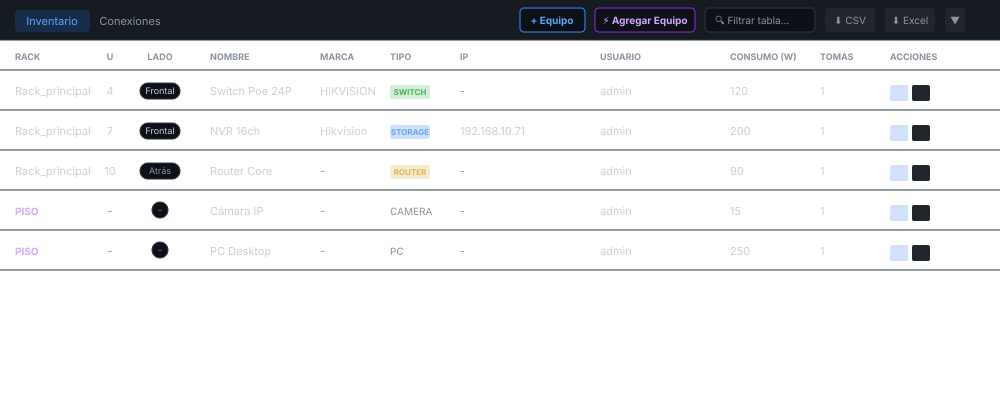
Inventario en Móvil: En smartphones, la tabla se adapta mediante un contenedor deslizable verticalmente (drawer) que puede arrastrarse hacia arriba, con soporte para scroll horizontal que facilita la lectura de todas las columnas.
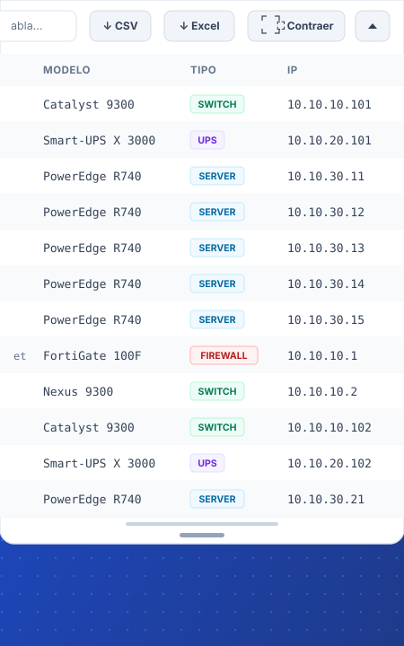
⬇ Excel o ⬇ CSV para auditar los equipos.
📷 PNG en la barra superior y selecciona el rack a exportar para generar una instantánea del armario. Si hay equipos ubicados directamente en la sala, aparecerá la opción independiente para exportar "Equipos de Piso".
Menú en Móvil: Las opciones globales de importación, exportación y guardado se ubican en el menú hamburguesa adaptado a un panel táctil desplegable.
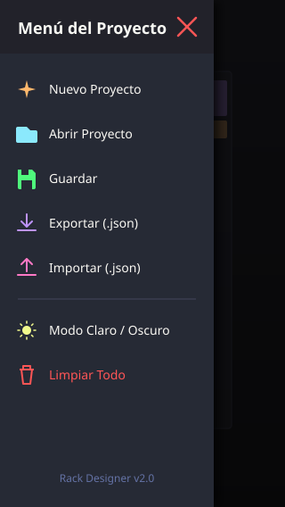
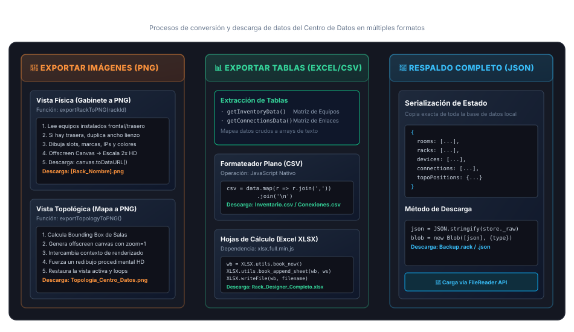

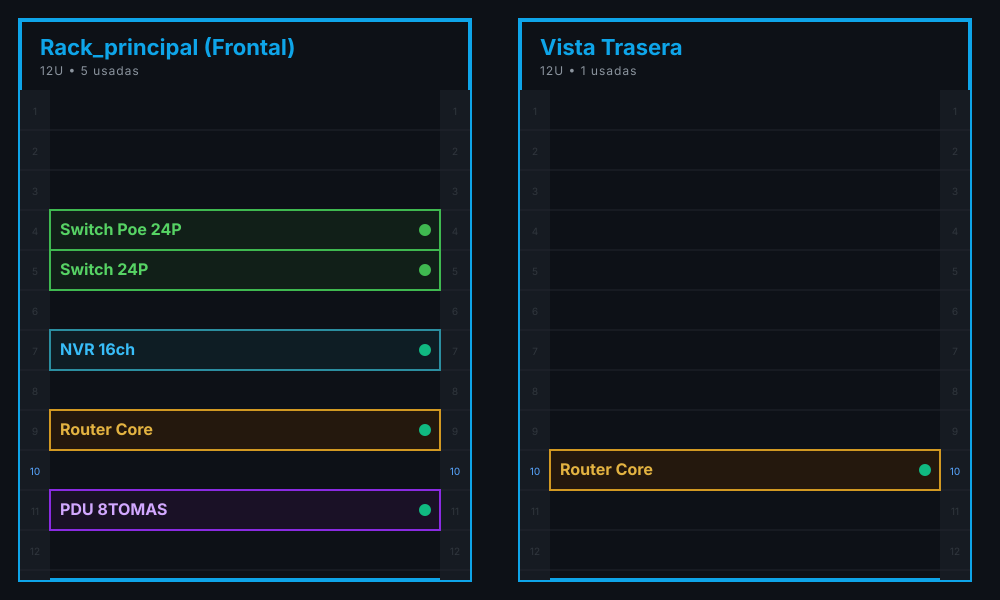